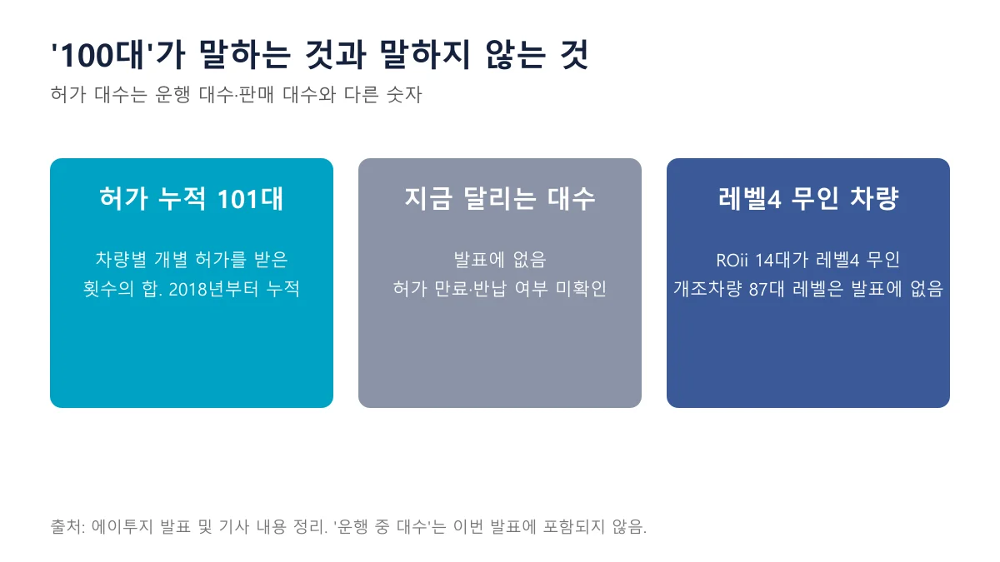
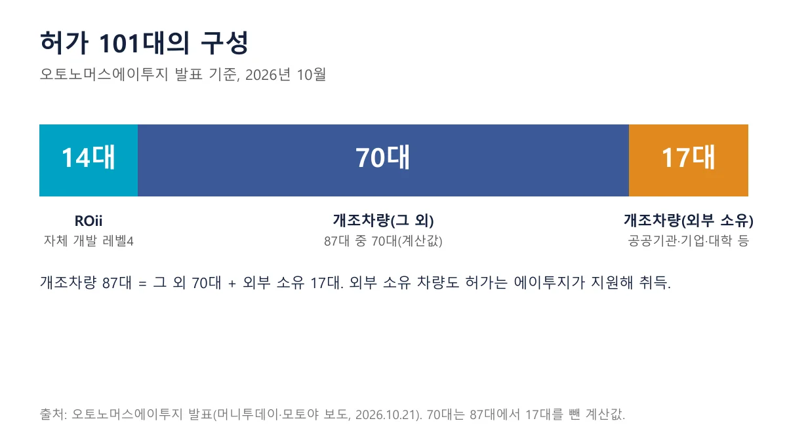
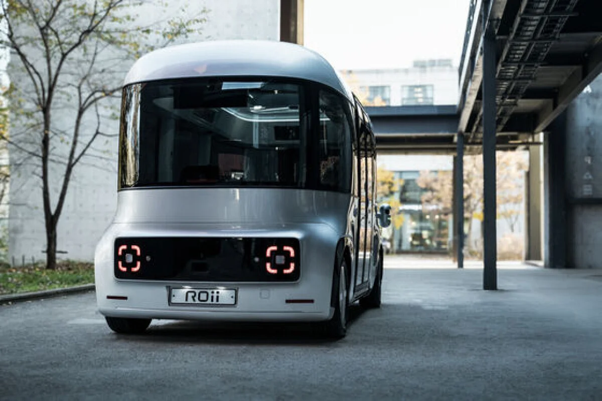
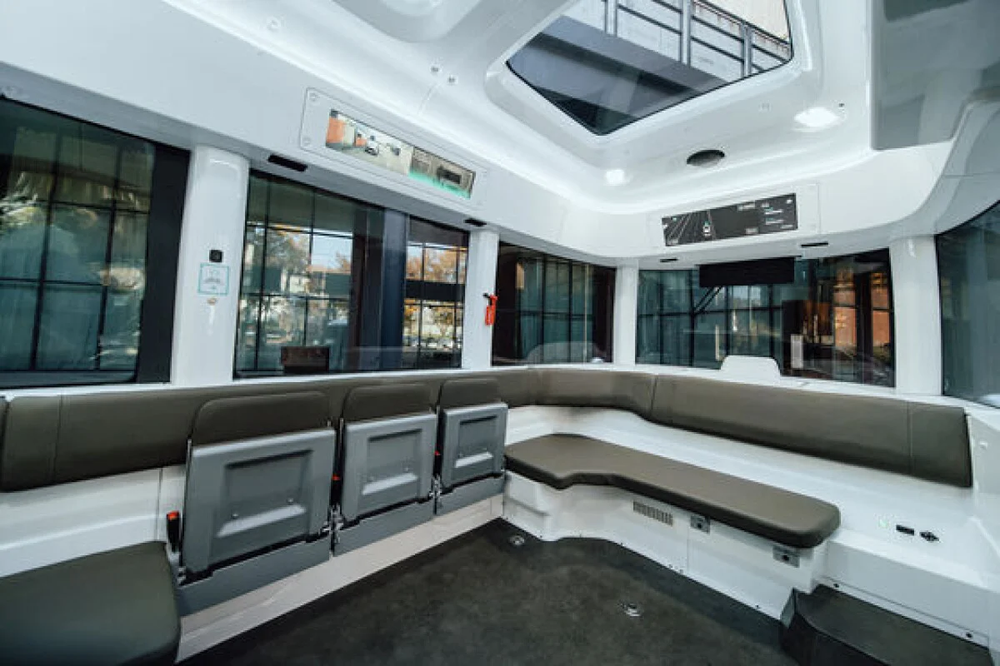
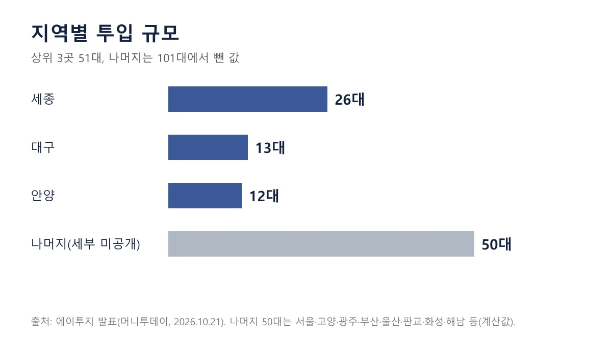
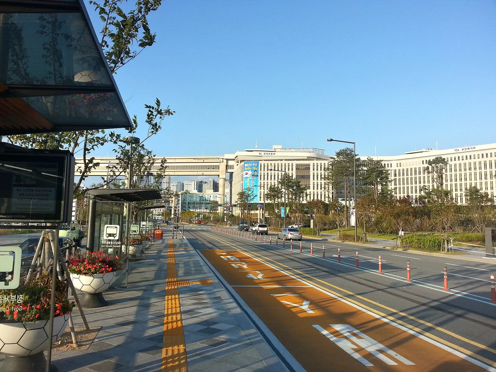
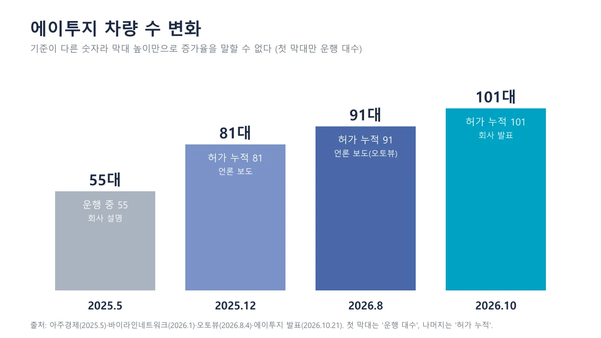
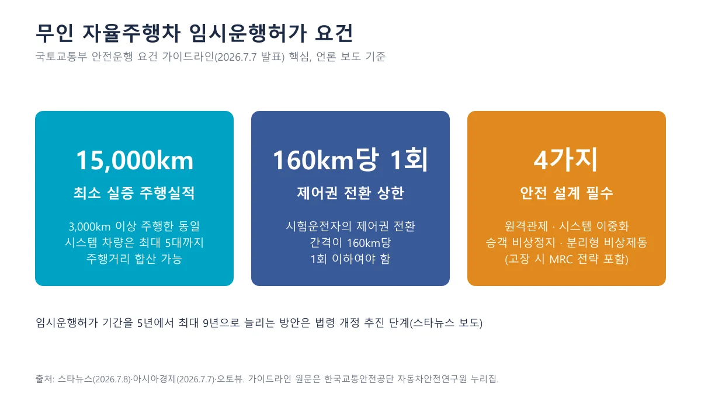
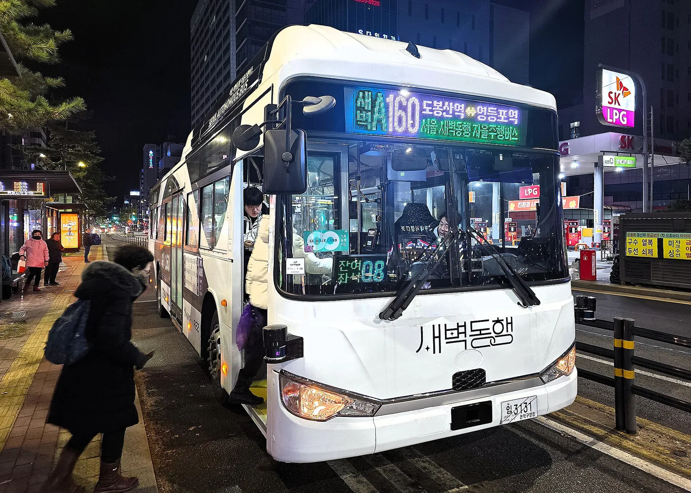

▲ 에이투지가 공개한 '허가 차량 누적 100대 돌파' 발표 이미지 ⓒ 오토노머스에이투지 (보도자료·언론 제공 이미지, 이용 책임은 게재자에게 있음)
"자율주행 허가 차량 100대 돌파"라는 뉴스를 보면 도로에서 무인차 100대가 달린다는 말처럼 들린다. 실제로는 어떤 숫자일까. 오토노머스에이투지(대표 한지형)가 2026년 10월 21일 발표한 "누적 101대"를 모토야 보도와 머니투데이 보도로 뜯어봤다.
결론부터 말하면 이 숫자는 2018년 첫 허가 이후 차량별로 받은 임시운행허가의 누적 합계다. 지금 도로 위에서 몇 대가 돌고 있는지는 발표에 없다. 제도의 법적 근거와 레벨 4 일반론은 앞선 기사에서 다뤘으므로, 이 글은 "이 숫자를 어떻게 읽어야 하나"에 집중한다.
1. "100대"가 가리키는 것: 허가 누적이지 운행 대수가 아니다
자율주행차 임시운행허가는 차량 한 대마다 따로 받는 허가라서, 같은 모델이라도 대수만큼 허가가 필요하다. 모토야와 머니투데이가 전한 발표 내용에 따르면 에이투지는 2018년 첫 허가를 받은 뒤 2026년 10월 추가 허가로 총 101대를 확보했다. 8년에 걸쳐 쌓인 숫자다.
▲ 에이투지가 공개한 '허가 차량 누적 100대 돌파' 발표 이미지. 로보버스·로보셔틀·로보택시 3개 플랫폼이 담겼다 ⓒ 오토노머스에이투지 (보도자료·언론 제공 이미지, 이용 책임은 게재자에게 있음)
발표에서 확인되지 않는 것도 분명하다. 허가가 만료됐거나 차량이 반납된 경우를 빼고 지금 실제로 굴러가는 차가 몇 대인지, 허가 건수와 차량 수가 정확히 일치하는지는 공개되지 않았다. 그래서 이 글에서는 "허가 누적 101대"라는 표현만 쓴다.

▲ 숫자의 성격 구분. 발표에 없는 항목은 '없음'으로 표시했다 ⓒ 카프리즘 제작 도표
📍 숫자 읽을 때 함께 볼 3가지
- 누적: 2018년부터 지금까지 합친 값
- 차량별 허가: 한 대 = 한 허가. 허가 대수와 판매 대수는 다르다
- 시험·연구용: 임시운행허가는 시험·연구 목적이며 상용 서비스 허가와 별개다
2. 101대의 구성: ROii 14대, 개조차량 87대
101대 가운데 14대만이 에이투지가 직접 만든 레벨 4 무인 자율주행 플랫폼 ROii(로이)이고, 나머지 87대는 기존 차량에 자율주행 시스템을 얹은 개조차량이다. 개조차량 중 17대는 공공기관·기업·대학·연구원이 소유하거나 운영하는 차량으로, 에이투지가 시스템 탑재와 허가 취득을 도왔다고 보도됐다.

▲ 허가 101대의 구성. 70대는 개조차량 87대에서 17대를 뺀 계산값이다 ⓒ 카프리즘 제작 도표
| 구분 | 대수 | 설명 |
|---|---|---|
| ROii | 14대 | 자체 개발 레벨 4 무인 자율주행 플랫폼 |
| 개조차량 | 87대 | 기존 차량에 자율주행 시스템 장착. 차종은 발표·보도에 없음 |
| └ 외부 소유·운영 | 17대 | 공공기관·기업·대학·연구원. 허가는 에이투지가 지원 |
ROii는 2026년 1월 바이라인네트워크 보도에서 경주 보문관광단지와 서울 청계천에서 운행됐다고 소개된 로보셔틀이다. 5월 27일 유니콘팩토리 보도에서는 ROii가 10대로 적혀 있어, 5개월 사이 14대로 늘었다고 볼 수 있다(두 보도 비교이며 회사 공식 확인은 못 함). 서울 청계천 노선은 서울 자율주행 버스 기사의 제도 표에 정리돼 있다.

▲ 에이투지의 레벨 4 로보셔틀 ROii 전면. 운전석이 없는 둥근 차체가 특징이다(홍보용 이미지) ⓒ Autonomous A2Z (코리아중앙데일리 게재, 이용 책임은 게재자에게 있음)

▲ ROii 실내. 운전대 없이 벤치형 좌석이 벽면을 따라 배치돼 있다 ⓒ Autonomous A2Z (코리아중앙데일리 게재, 이용 책임은 게재자에게 있음)
3. 어디서 얼마나 달렸나: 세종 26대, 115만km
지역별 투입은 세종이 26대로 가장 많고 대구 13대, 안양 12대가 뒤를 잇는다. 서울·고양·광주·부산·울산·판교·화성·해남 등에서도 운행·실증을 하고 있다는 것이 발표의 설명이다. 상위 3곳을 합치면 51대로, 나머지 약 50대는 세부 수치 없이 여러 지역에 흩어져 있다.

▲ 지역별 투입 대수. 나머지 50대는 101대에서 상위 3곳 합계를 뺀 계산값이다 ⓒ 카프리즘 제작 도표
누적 자율주행 거리는 국내외 합쳐 115만km다. 앞서 5월 보도에서 이 회사는 4월에 100만km를 넘겼고 5월 15일 기준 102만 3,355km라고 밝혔다. 주행거리는 "허가 100대"와 별개로 쌓인 숫자이고, 허가 대수가 늘었다고 거리가 그만큼 비례해 늘지는 않는다.

▲ 세종 BRT 정부세종청사 남측 정류장 일대. 에이투지는 세종에 26대를 투입했다고 밝혔으나 차종·노선은 발표에 없어, 이 사진은 지역 예시이며 해당 차량이 아니다 ⓒ Minseong Kim (Wikimedia Commons, CC BY-SA 4.0)
ROii는 이번 주에도 도로에 나와 있다. 디지털투데이 보도에 따르면 에이투지는 10월 19~23일 강릉 ITS 세계총회에서 ROii를 오전 9시~오후 6시 30분 간격으로 무료 운행하며, 기술 시연장에서 출발해 강릉올림픽파크 후문·강릉아이스아레나·강릉컨벤션센터를 거치는 약 2.6km 순환 노선(한 바퀴 약 10분)이다. 시험 운전자 1명이 동승하고 승객은 최대 8명이라고 한다. 이 행사 운행이 101대 중 어느 차량인지는 보도에 없다.
해외 사업도 있다. 싱가포르·UAE·일본에서 실증을 진행하거나 준비 중이고, 연내 예정된 국토교통부 광주 자율주행 실증도시 조성사업도 추진한다고 한다. 광주 사업의 규모와 참여 구조는 광주 자율주행차 200대 실증 기사에 정리했다.
4. 업계에서 어느 정도 비중일까: 점유율은 단정할 수 없다
전국 허가 대수의 최신 공식 통계를 이번 조사에서는 찾지 못해, "에이투지가 전체의 몇 %"라고 말할 수 있는 근거가 없다. 찾은 것은 시점과 성격이 다른 숫자들뿐이다.
| 시점 | 내용 | 출처 |
|---|---|---|
| 제도 첫해(연도 미명시) | 허가 11건, 6개 기관(단위가 '건'이라 아래 '대'와 직접 비교 불가) | 국토교통부 가이드라인 브리핑(2022.10, 이투데이 인용) |
| 2022년 10월 | 전국에서 시험 중인 자율차 258대(62개 기관) | 같은 브리핑 |
| 2025년 5월 | 회사 관계자 설명: 국내 허가 차량 455대 중 55대를 운행 중 | 아주경제(2025.5.13), 독립 검증 못 함 |
| 2025년 12월 | 에이투지 누적 허가 81대 | 바이라인네트워크(2026.1) |
| 2026년 8월 | 에이투지 허가 91대 확보(보도 시점 기준) | 오토뷰(2026.8.4) |
| 2026년 10월 | 에이투지 누적 허가 101대 | 에이투지 발표(모토야·머니투데이) |
표의 숫자를 한 줄로 이어 읽으면 안 되는 이유는 단위가 다르기 때문이다. 제도 첫해는 '건', 2022년은 전국 시험 '대수', 2025년 5월은 '운행 중 대수', 이후는 에이투지 한 곳의 '허가 누적'이라 같은 축에 놓을 수 없다.

▲ 에이투지 차량 수 변화. 첫 막대는 운행 대수, 나머지는 허가 누적이라 기준이 다르다 ⓒ 카프리즘 제작 도표
2025년 5월의 "455대 중 55대"는 허가 건수와 운행 차량이 섞인 회사 설명이어서 약 12%라는 계산도 참고 정도로만 봐야 한다. 시점이 다른 2026년 101대를 그 분모에 대입하는 계산은 하지 않았다. 다만 허가 누적이 2025년 12월 81대에서 10개월 만에 101대로 20대 늘었다는 흐름은 두 보도로 확인된다. 오토뷰는 8월 4일 에이투지가 91대의 임시운행허가를 확보했다고 전해, 8월 이후 약 2.5개월 사이 10대가 추가된 셈이다(보도 시점 기준 비교).
"100"이라는 숫자가 이번이 처음은 아니다. 아시아경제는 에이투지가 2020년 6월 국내 전체 자율주행차 임시운행허가 가운데 100번째 허가를 받아 국토교통부에서 허가증을 받았다고 전했다. 당시의 100은 전국 누적 순번이고, 이번 101대는 회사 한 곳의 누적 대수라서 같은 숫자라도 의미가 전혀 다르다.
국가 단위 최신 통계는 국토교통부 자율주행정책과가 갖고 있을 것이나 국토교통부 보도자료·정책브리핑을 다시 검색하고 서울경제 등 발표 기사를 재확인한 결과(10월 21일 기준)에서도 최신 총계는 나오지 않았다. 정책브리핑에서 찾은 숫자는 2022년 10월 국토부 브리핑의 "전국 258대 시험운행"이 가장 최근이다. 업계 경쟁 구도는 타타대우·라이드플럭스 레벨 4 트럭 기사에서도 일부 볼 수 있다.
5. 레벨 구분: 101대 모두 무인차는 아니다
레벨 4(정해진 조건에서 시스템이 운전 전체를 맡는 단계)로 소개된 것은 ROii 14대뿐이고, 개조차량 87대의 자율주행 레벨은 발표에 없다. 레벨 개념과 국내 법의 분류(부분·완전 자율주행차), 임시운행허가와 시범운행지구의 차이는 현대차·기아 레벨 4 트럭 실증 기사에서 법령 조문으로 확인했다.
이 글에서 더할 내용은 국토교통부가 2026년 7월 7일 발표한 "무인 자율주행차 안전운행 요건 가이드라인"이다. 스타뉴스 보도에 따르면 레벨 4 무인차가 임시운행허가를 받으려면 실증 주행실적이 최소 1만 5,000km 이상이고, 시험운전자의 제어권 전환이 160km당 1회 이하여야 한다. 원격관제 실시간 모니터링과 자율주행시스템 이중화, 탑승객 비상정지 수단도 필수라고 한다.
| 항목 | 내용 |
|---|---|
| 실증 주행실적 | 최소 15,000km 이상(필수) |
| 제어권 전환 | 160km당 1회 이하 |
| 실적 합산 | 같은 시스템·제원 차량 중 3,000km 이상 주행한 차량에 한해 최대 5대까지 |
| 안전 설계 | 원격관제(실시간 모니터링·양방향 통화), 시스템 이중화, 탑승객 비상정지, 시스템 분리형 비상제동, 고장·운행영역 이탈 시 관제센터 경고·비상등·정지(MRC) 전략 |
이 요건이 에이투지의 ROii 14대에 어떻게 적용됐는지는 보도에서 확인되지 않는다. 가이드라인은 7월 7일부터 한국교통안전공단 자동차안전연구원 누리집에서 볼 수 있다고 스타뉴스가 전했다. 국토부는 국제기준 세부 내용을 반영하는 자동차관리법 개정안을 연내 마련하고, 임시운행허가 기간을 현행 5년에서 최대 9년으로 늘리는 방안도 추진한다고 한다. 이는 추진 계획이라 확정된 제도 변경이 아니다.

▲ 2026년 7월 무인 자율주행차 안전운행 요건 가이드라인의 핵심 요건(언론 보도 기준) ⓒ 카프리즘 제작 도표

▲ 서울 새벽동행 A160 버스(도봉산역~영등포역). 에이투지 차량이라는 근거는 확인하지 못해 서울 자율주행 버스의 예로만 싣는다 ⓒ Trainholic (Wikimedia Commons, CC BY-SA 4.0)
✅ 이 뉴스를 읽을 때 확인할 점
· 허가 누적 ≠ 운행 대수: 지금 달리는 수는 발표에 없다
· 레벨 4는 14대: 나머지 87대 개조차량 레벨은 미공개
· 시험·연구용: 임시운행허가는 상용 영업 허가가 아니다
· 비교 숫자의 기준 차이: 55대(운행)·81대·101대(허가)를 한 줄로 이으면 안 된다
· 회사 발표 기준: 국토부 확인 자료는 찾지 못했다
6. 일반인이 당장 달라지는 것은 무엇인가
당장 도로 사정이 달라진다는 뜻은 아니지만, 세종·대구·안양처럼 지역별 실증이 늘면 자율주행 셔틀·버스를 직접 타볼 기회가 넓어진다는 신호로 읽을 수 있다. 허가 100대가 곧바로 요금을 내고 타는 서비스를 뜻하지는 않는다. 임시운행허가는 시험·연구 목적이고, 유상 운송에는 별도 제도가 필요하다는 점은 앞선 트럭 기사에서 확인했다.
- 타볼 수 있나: 지역·노선별로 다르다. 청계천 노선은 서울시 안내를 따로 확인해야 한다.
- 안전은: 안전운전자 탑승 여부, 사고 시 책임 구조는 이번 발표에 없다.
- 회사 규모: 바이라인네트워크는 에이투지의 2025년 매출을 160억 원으로 전했고, 매출은 R&D 과제·실증·용역에서 나온다고 설명했다. 본격 서비스 상용화는 아직이다.
- 다음 일정: 에이투지는 연내 광주 실증도시 조성사업을 추진하고, 2026년 말~2027년 초 레벨 4 성능 인증 확보를 목표로 한다고 5월 보도에서 밝혔다.
7. 이 숫자에서 아직 확인되지 않은 것은 무엇인가
- 국토교통부의 에이투지 허가 건수·전국 총계: 공식 최신 통계를 찾지 못함(정책브리핑·언론 재탐색에서도 2022년 258대가 최신)
- 현재 운행 중인 대수와 허가 만료·반납 현황
- 개조차량 87대의 차종·레벨
- 해외 차량이 101대에 포함되는지: 임시운행허가는 국내 제도라 국내 허가로 보이나 발표에 명시 없음. 오토뷰(8월 4일)는 ROii 8대가 UAE 스페이스42의 TXAI 서비스용으로 공급된다고 전했는데, 이 8대가 ROii 14대에 포함되는지도 확인하지 못함
- 에이투지 보도자료 원문: 홈페이지 접속이 막혀 언론 보도로 확인
발표 내용은 모토야 기사에서 볼 수 있다. 모토야 기사 바로가기
카프리즘 시선
"100대 돌파"에서 눈여겨볼 부분은 대수 자체보다 구성과 속도다. 101대 중 레벨 4로 소개된 ROii는 14대(약 13.9%, 카프리즘 계산)이고 나머지 87대는 개조차량이다. 허가 누적은 2025년 12월 81대에서 2026년 8월 91대, 10월 101대로 늘었는데, 8월 이후 약 2.5개월 사이에 추가된 10대는 그 앞 시기(12월~8월) 증가분과 같은 수다. 같은 증가분이 더 짧은 기간에 붙었다는 뜻이다(두 보도 비교).
다만 이 숫자는 허가 누적이고, 전국 총계를 찾지 못해 업계 비중이나 상용화 시점으로 이어 읽을 근거는 이 기사에 없다. 시험·연구용 허가가 늘어난 것과 유상 서비스가 가까워진 것은 별개의 문제다.
8. 요약
오토노머스에이투지는 2018년 첫 허가 이후 2026년 10월까지 자율주행 임시운행허가 차량을 누적 101대 확보했다고 발표했다(모토야·머니투데이 보도). 구성은 자체 개발 레벨 4 무인 플랫폼 ROii 14대, 개조차량 87대(외부 소유 17대 포함)이며 세종 26대, 대구 13대, 안양 12대 순이다.
이 숫자는 누적 허가일 뿐 운행 대수가 아니고, 레벨 4로 소개된 차량도 ROii 14대다. 전국 최신 허가 통계는 확인하지 못해 업계 점유율은 단정할 수 없다.